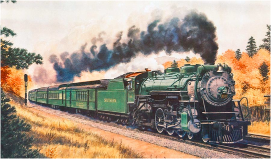
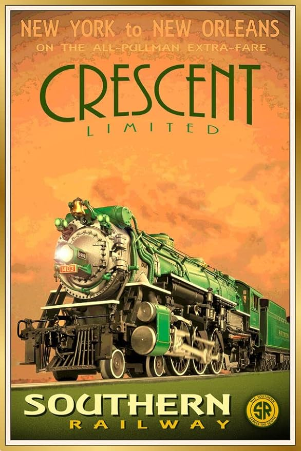

Thomas Ruffin Car
Former Flagship Car
Overview
A luxury sleeper car built by Pullman in 1929 that served on the Crescent Limited line owned by Southern Railway. At the time, the Crescent Limited line was one of Southern's premier luxury passenger services. The car is named after Thomas Carter Ruffin. He was a Princeton alumnus who served as the Chief Justice of the North Carolina Supreme Court. Pullman was known for naming cars after prominent figures in American history.
The Ruffin was originally built with ten open sections and two drawing rooms. It was later modified in 1935 to have 2 double bedrooms instead of one and to remove one of the drawing rooms. This change was likely made because of the decline in passenger numbers during the Great Depression. Drawing rooms were more expensive, so they often went unsold. Double bedrooms were becoming more popular during this time as they were cheap to book. Thus, Pullman would add more double bedrooms in exchange for removing one drawing room.
The Crescent Limited line is one of the oldest running lines in America. While the Ruffin was in service, the Crescent ran between NYC and New Orleans. It was named after the Crescent City, New Orleans' nickname. The Ruffin, alongside other cars serving the Crescent Line, was painted a two-tone green color nicknamed “Virginia Green”. The Ruffin served on the line till sometime in the 1940s when it was phased out for lightweight cars. It was eventually renumbered to be Southern 2449 after the major Pullman divestiture and was donated to the National Railway Historical Society (NRHS) in 1965.
Virtual Tour
Explore the Thomas Ruffin Car with this 3D walkthrough
Related Artifacts


Ready to Begin Your Journey?
Explore our complete collection of exhibitions and discover the rich history of southeastern railways.
Explore All Exhibitions